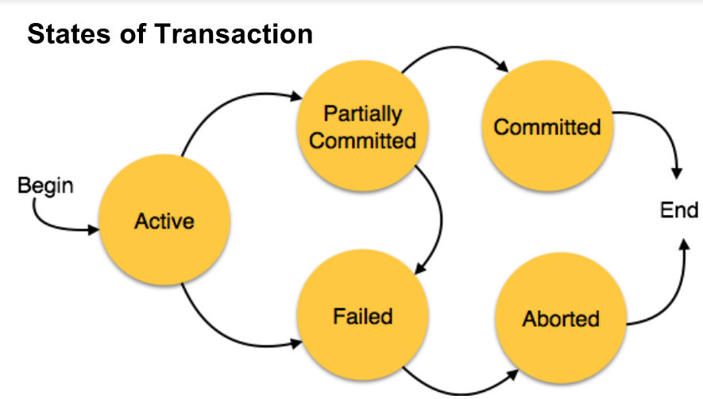

Database Transactions
SQL queries can be expanded with the following content:
- LIKE - Used to find data matching an example
- JOIN - Used to define table joins
- COUNT() - Returns the number of rows that matches a specified criteria.
- GROUP BY - Used with aggregate functions to group the result set
- % - Refers to any length string, can be prefaced
- * -Wildcard - will select everything matching the pattern
- _ - Represents any one character
New SQL operators

Inner joins return a set of results where both tables match. Other joins exist
for both left and right, however are not needed for the exam.

Referrantial Integrity
Referrantial integrity states that foreign keys should always point to an existing primary key.
If an operation is going to delete an item with a primary key value that another table's foreign key references,
there are a few options. The first is to prevent the deletion operation. Another is to set the foregin values
to null, however this is often prohibited. The final option is to cascade delete all entries that depend on that key.
This can have unforseen consequences as many entries can be removed.
In many systems, deletion is avoided all together and a "deleted" column is added to
the table. This way, items can be marked as deleted without actually deleting them and causing conflicts.
Database transactions
Transactions are how actions are carried out in databases. Each transaction follows the following procedure.
The transaction begins and is active. It then begins to carry out actions until all are comitted. Once this
happens, the changes are comitted and the transaction ends. If at any point during the process an action
fails, the entire transaction is aborted and no changes are comitted. The transaction then ends. This
must be guaranteed in any situation, including crashes and power failures and is reffered to as atomicity

Principles of database transactions
- A - Atomicity: Transactions should be all or nothing
- C - Consistency: All rules of the database must be followed
- I - Isolation: The order of transactions shouldn't matter
- D - Durability: A comitted transaction must stay comitted
The ACID Principle
Atomicity requires that each transaction be "all or nothing“: if one part of the
transaction fails, then the entire transaction fails, and the database state is left
unchanged.
An atomic system must guarantee atomicity in each and every situation, including
power failures, errors and crashes.
To the outside world, a committed transaction appears (by its effects on the
database) to be indivisible ("atomic"), and an aborted transaction does not
happen.
The consistency property ensures that any transaction will bring the database from
one valid state to another.
Any data written to the database must be valid according to all defined rules,
including constraints, cascades. triggers, and any combination thereof.
This does not guarantee correctness of the transaction in all ways the application
programmer might have wanted (that is the responsibility of application-level
code), but merely that any programming errors cannot result in the violation of any
defined rules.
The isolation property ensures that the concurrent execution of transactions
results in a system state that would be obtained if transactions were executed
sequentially, i.e., one after the other.
Providing isolation is the main goal of concurrency control.
Depending on the concurrency control method (i.e., if it uses strict - as opposed to
relaxed - serializability), the effects of an incomplete transaction might not even be
visible to another transaction.
The durability property ensures that once a transaction has been committed, it will
remain so, even in the event of power loss, crashes, or errors.
In a relational database, for instance, once a group of SQL statements execute,
the results need to be stored permanently (even if the database crashes
immediately thereafter).
To defend against power loss, transactions (or their effects) must be recorded in a
non-volatile memory.